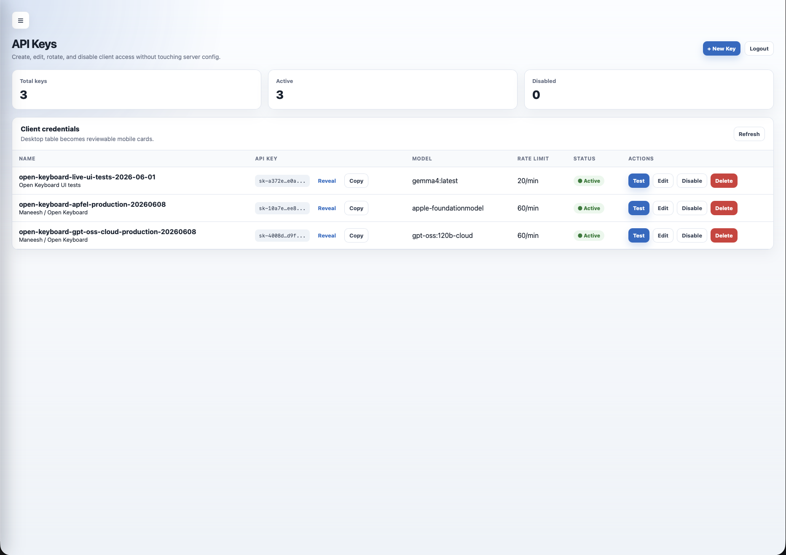
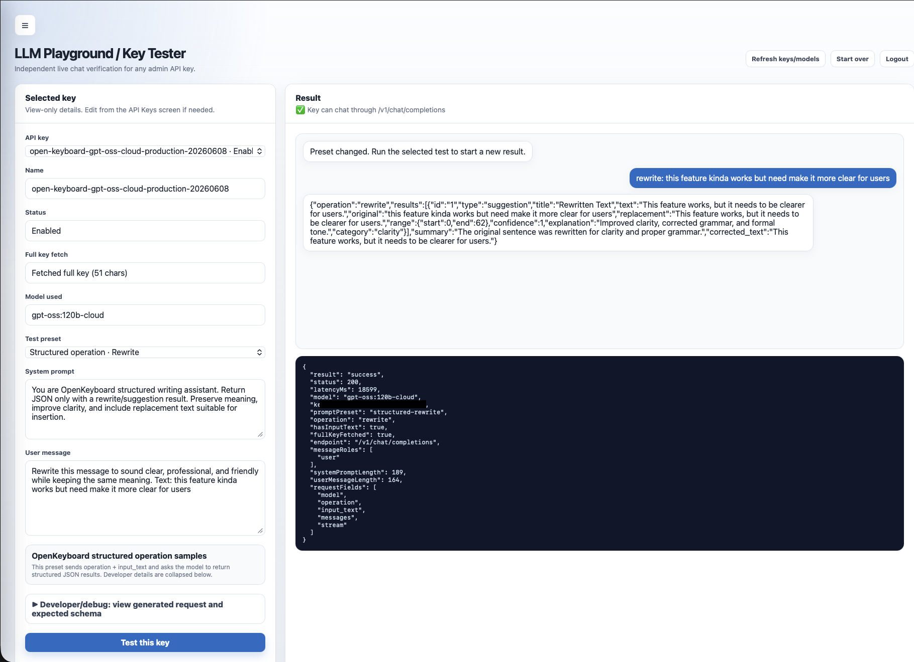

Open Keyboard + LLM Gateway
A self-hostable control layer for routing AI requests from Open Keyboard and other local tools through managed client keys, model access rules, and operational controls.
Product idea: give AI-powered apps a controlled backend instead of placing provider keys, model choices, and request rules directly inside each client.
Current progress: the gateway can manage client keys, apply usage limits, expose scoped model lists, route OpenAI-compatible chat requests, and test requests through an admin playground.
My role: backend design, TypeScript implementation, admin UI, local deployment workflow, OpenKeyboard integration contract, and verification scripts.
Manager Summary
AI Access Needs A Control Point
Client apps need a safe way to call AI models without hardcoding credentials, exposing every model, or mixing product logic with provider setup.
Gateway Between Product And Models
The gateway gives each client a managed key, approved models, and usage limits, then forwards compatible requests to configured AI backends.
Better Operational Control
It makes the AI layer easier to test, rotate, limit, and debug without changing the iOS keyboard every time the backend setup changes.
Working Local Infrastructure
The project is ready for local and self-hosted experimentation, with admin workflows, request routing, and tests for the core contracts.
What Works Now
Client Key Management
The admin UI can create, edit, rotate, disable, and test client keys without changing server configuration files for each client.
AI Request Routing
The gateway accepts OpenAI-compatible requests, validates the client key, checks model access, and forwards the request to the configured model backend.
Usage And Model Limits
Each key can have allowed models, default model behavior, and request limits so tools can share the gateway with clearer boundaries.
Admin Playground
The browser playground can run live request checks for a selected key, including OpenKeyboard-style writing requests.
Gateway Screens


Why It Matters For Open Keyboard
Cleaner Product Boundary
- The keyboard owns the user experience.
- The gateway owns model access, keys, limits, and request routing.
- Backend changes do not require redesigning the keyboard workflow.
Safer Experimentation
- Model choices can change behind the gateway.
- Keys can be limited or disabled per client.
- Secrets and runtime configuration stay outside the public website.
Current Focus
Self-Hosted Readiness
- Improve setup guidance for running the gateway outside a local development environment.
- Continue validating quality and latency across local and hosted AI models.
- Keep deployment checks and runtime secrets separate from public code.
Client Integration
- Keep grammar and writing-operation responses predictable for the keyboard.
- Expand tests around gateway contracts and admin workflows.
- Keep the public story focused on infrastructure capability, not production-scale claims.
Technology Stack
Gateway
Runtime
Repository Entry Points
The gateway repository contains the backend, admin UI, request routing code, config examples, and local verification workflow.
View the gateway implementation, or open the keyboard page to see the product experience it supports.